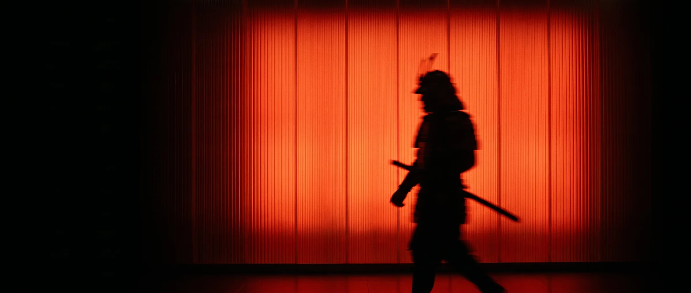
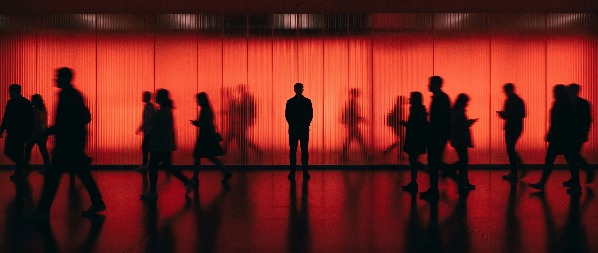
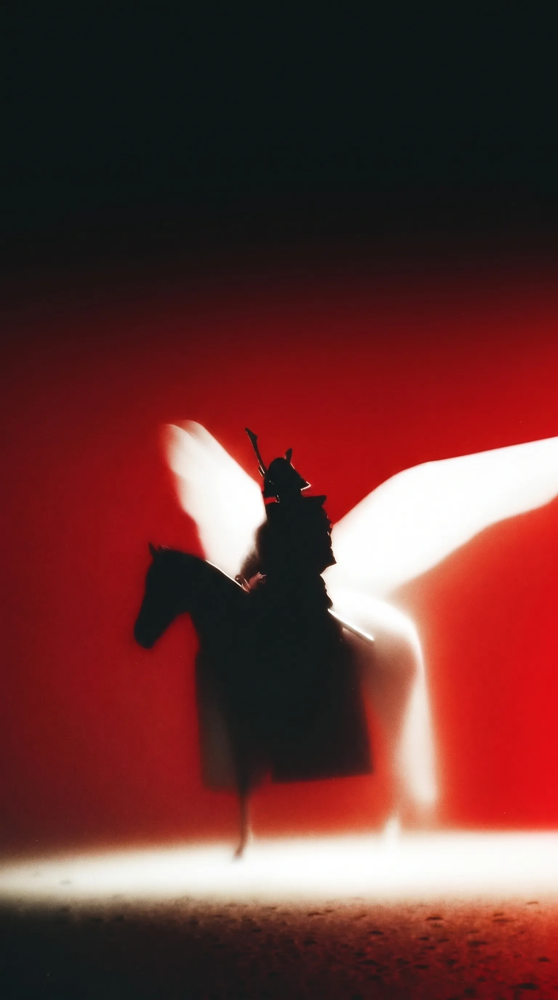
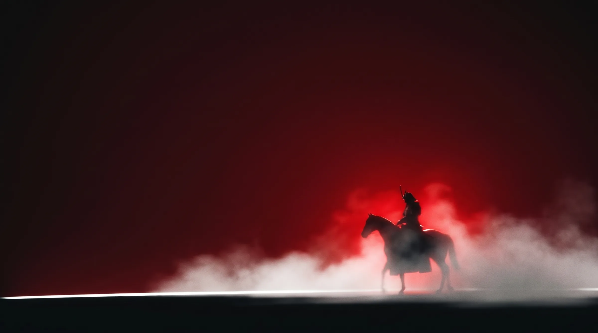
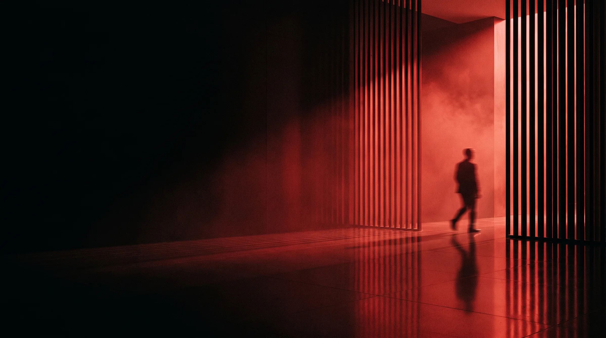
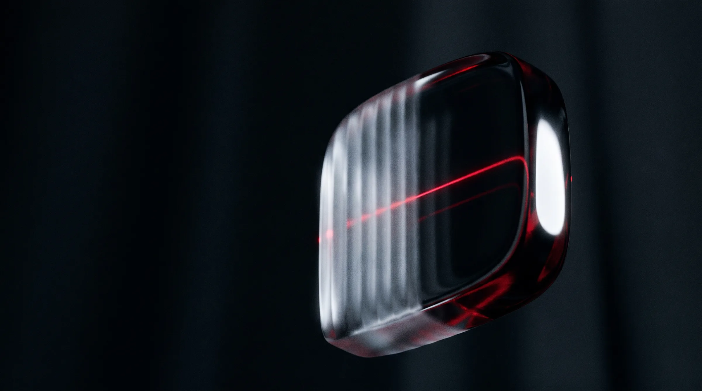
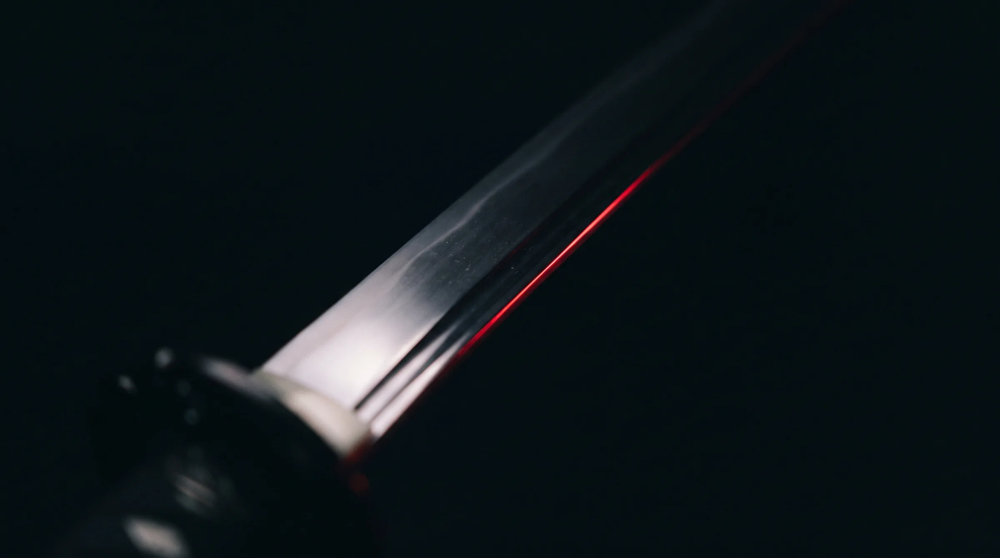
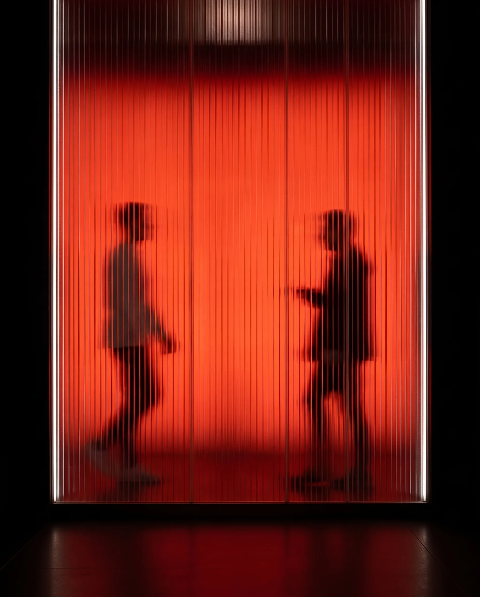

ALCHEMY LABS · MOOD BOARD · 2026-09-19
One language for every frame: a black silhouette against a single crimson field, fluted glass as the material, temporal blur for motion, obsidian liquid glass for the "machine". Conditioned on the site's own samurai and red-slats footage so everything grades as one film. Generated on Higgsfield (Nano Banana, 2K).







